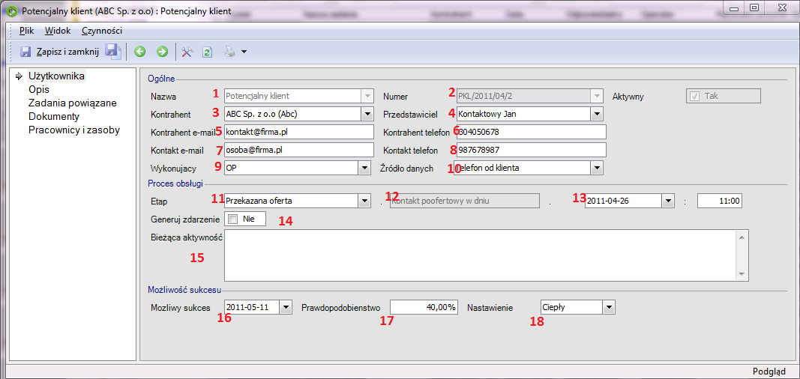

|
Opisane rozwiązanie stanowi jedynie przykład konfiguracji programu i może zostać zmodyfikowane do potrzeb firmy przez wdrażającego program autoryzowanego Partnera enova365. |
Narciarz Handel sp. z o.o. to firma handlowa, dostarczająca do sklepów sprzęt i akcesoria sportowe.
Dzięki wypracowanemu systemowi dostaw oraz wysokiej jakości dostarczanych produktów firma znalazła się w grupie liderów rynku swojej branży. Z pozycją jednak przyszło także zagrożenie. O ile wcześniej firma postrzegana jako dostawca lokalny, nie była traktowana jako poważny konkurent, o tyle wraz ze wzrostem, konkurencja zaczęła baczniej przyglądać się postępom firmy Narciarz. Rywalizacja o klienta wymagała coraz szybszych decyzji i dostępnej natychmiast wiedzy na temat stanu rozmów z potencjalnymi klientami i całej historii dotychczasowych kontaktów.
Niestety dotychczasowe metody ewidencjonowania kontaktów, czyli notes handlowca i arkusz excel okazały się nieużyteczne. Nakład pracy w postaci czasu na przygotowanie oferty, przygotowanie do rozmów i spotkań jaki był konieczny do zdobycia nowego klienta był ogromny a z powodu urlopów, przegapionych terminów spotkań czy telefonów szanse na sukces malały. Zarząd szukał więc sposobu organizacji pracy i narzędzi, które uproszczą pracę zespołu sprzedażowego oraz ułatwią dostęp do danych analitycznych.
Wdrożono moduł CRM i dynamika wzrostu firmy znów nabrała tempa. Handlowcy prowadząc rozmowy z kontrahentem, ewidencję zdarzeń i planowanie kolejnych działań realizują w ramach jednego formularza Potencjalny klient . Przygotowując się do rozmowy czy spotkania, nie musi już szukać w wielu miejscach informacji o poprzednich kontaktach. Podobnie, jeśli do raportu potrzebna jest informacja o stanie rozmów z klientem, nie trzeba analizować wielu zapisów, wystarczy rzut oka. Teraz firma jest gotowa do dalszego wzrostu.
Rozpoczynając prace z nowym potencjalnym klientem, handlowiec tworzy na liście Oferty nowe zadanie Potencjalny klient – będzie to centralne miejsce pracy z kontaktem. Wskazuje kontrahenta oraz, jeśli uda się zdobyć dane rozmówcy także jego dane personalne uzupełniając nową kartotekę osoby kontaktowej. W polu źródło danych może wpisać dla celów raportowych także informację o pochodzeniu danych o kontakcie.
W trakcie lub po przeprowadzonej rozmowie handlowiec przechodzi do sekcji Proces obsługi i uzupełnia pole Etap – wskazując na jakim etapie pracy z klientem się znajduje. Pole (12) informuje o kolejnym kroku do wykonania. Operator w polu daty i godziny może wprowadzić planowany termin wykonania kolejnego kroku: czy to telefonu czy spotkania. Następnie jeśli dojdzie do wniosku że uzyskane informacje będą przydatne nie tylko podczas zdobywanie klienta ale także później (np. o konkurencji firmy, zatrudnieniu, kierunkach rozwoju, strukturze organizacyjnej itp.) może zaznaczyć pole Generuj zdarzenie co spowoduje, iż podczas zamykania zadania powstanie osobne zdarzenie w polu Opis zawierające treść wpisaną w polu Bieżąca aktywność. Naturalnie to co wpisze w polu Bieżąca aktywność trafi także na zakładkę Opis jako wpis ostatni na liście. Jeśli podczas kontaktu handlowiec uzyskał informacje pozwalające określić kiedy może nastąpić sprzedaż (termin zakończenia przetargu, wewnętrzny termin klienta) może wprowadzić datę w polu Możliwy sukces. Pole Nastawienie pozwala wprowadzić stopień zainteresowania klienta oferowanymi produktami.
Po zakończeniu pracy, operator zapisuje kartotekę. Program przypomni mu o nadchodzącym terminie kolejnego kroku w pracy z klientem. Prosty i przyjazny sposób na ewidencjonowanie i śledzenie statusu rozmów z klientem dla pracowników a dla zarządu łatwy dostęp do danych niezbędnych do zestawień i skutecznego zarządzania firmą.
